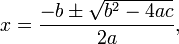

Math Programs 2:
DataSet: Write a class named DataSet, which will have the ability to register values one at a time and keep track of the largest value entered and the smallest value entered. DataSet doesn’t need to keep track of every number, but should have instance fields to keep track of the largest and smallest value that have been registered.
For example:
DataSet mySet = new DataSet(); mySet.registerInt(8); mySet.registerInt(16); mySet.registerInt(-4); System.out.println( mySet.toString() );
The code above should output: "So far the largest value entered is 16, and
the smallest is -4, this is a range of 20"
Add a constructor to DataSet that takes in no parameters and assigns some good initial values to the largest and the smallest instance fields.
Add a method named registerInt that takes in an int as a parameter. When an int is registered, it should be compared with whatever is currently in the largest value using. The larger of the two should be stored in the largest value field. This may be done using math.max. A similar strategy should be used to update the smallest value field.
Add a method named getRange() that will return the difference between the largest and smallest values
Add a toString method that returns a String in the form of “So far the largest value entered is _____, and the smallest is _____, this is a range of _____”. Do not create an instance field to hold the range, you should be using a method that you’ve created to help you.
Quadratic: Create a class named Quadratic, which will represent an equation in the form of ax^2+bx+c=y. There should be instance fields to represent the a,b, and c values. The constructor should take in three ints as parameters and assign them to the appropriate instance fields.
Add a method named getVal(int x) which takes in an x value and returns the value that the equation would give for y.
Add two methods, rootOne and rootTwo, which will use the quadratic formula to return one of the two roots of the equation:
The quadratic equation is

, which is actually two separate solutions because of the ‘plus or minus’. rootOne will use the ‘+’ while rootTwo will use the ‘-‘. I recommend that you don't try and solve this all in one line. For example, you could calculate everything under the square root and store it in a variable, and then later the calculation wouldn't be so messy.
Add a toString method that returns a String in the form of “The equation __x^2+__x+__ has roots at ___ and ___
WARNING! The Quadratic formula has a chance of giving back imaginary numbers. If you give an a,b, and c value that has an imaginary number as a solution, it will return NaN (Not A Number). We don't know enough programming to prevent this from happening, so we're just going to put in numbers that we know have real solutions.
Test out your program with the following:
a=1, b=-17, c=60 should return solutions of 5 and 12
a=14, b=23, c=3 should return solutions of -1.5 and -0.14285
HourMinSec: Create a class named HourMinSec that will prompt the user for a number of seconds and then tell the user how many Hours, Minutes, and Seconds it is.
Example:
Please enter a value in seconds:
5000
5000 seconds is 1 hour(s) 23 minute(s) and 20 second(s)
Hints: There are 3600 seconds in an hour. Use a combination of int division and mod to determine how many hours there are and how many seconds are left over. After that you can do a similar action to split the remaining seconds into minutes and seconds.
DistanceDescriber: Create a class named DistanceDescriber, which will take in a double from the user that represents a number of miles. The program will then print out how many miles, feet, and inches that decimal is representing.
Example:
Please enter a distance in miles:
5.285
That distance is 5 mile(s) 1504 feet and 9 inches
The input is a double, but the output is three ints. You may discard fractions of an int.